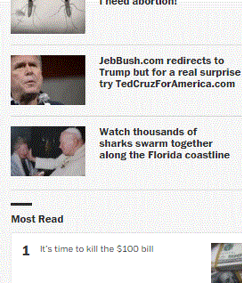

Bloopers
Sunday, February 21, 2016
 To the left is a snapshot from The Washington Post online newspaper the other day. See that picture with the pope? That's what they ran on the front page with that headline about sharks. If you clicked on it, the article was actually about the sharks, but I found the mistake amusing. The appalling thing is the regularity with which these sorts of mistakes happen. In The Washington Post. A national newspaper.
You paying attention Bezos? The other thing that has started to annoy me about Wapo articles is the number of times you'll go to read an article and in the middle of it are snapshots of what people on twitter are saying about something that happened. Is this what qualifies as journalism now? I went on twitter and copied the most liked comments for a specific hashtag? If I wanted to read twitter comments, I would be on the twitter. I don't need you to do it for me, "journalist".
Why do I get the impression that this is actually a decree that came down from up high? I could totally imagine Bezos saying to the top editors (or whatever equivalent power structure), "We need to incorporate more social media in our newspaper!"" Or whatever management buzzwordy way he would say it. Slowly, Wapo will transform itself from an actual newspaper to the facebook of journalism, and we'll be reading stories about what's for sale on Amazon that day. I fear the future. Even if I shop on Amazon almost every day.